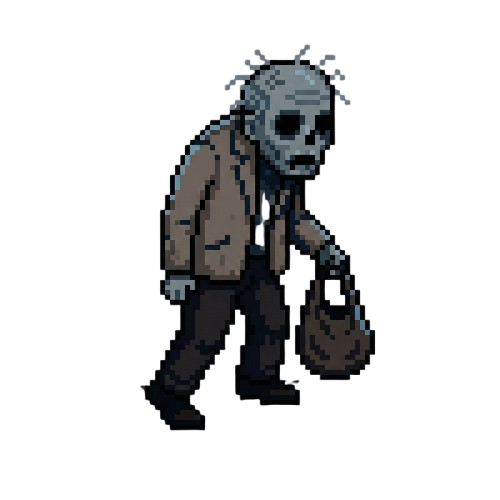
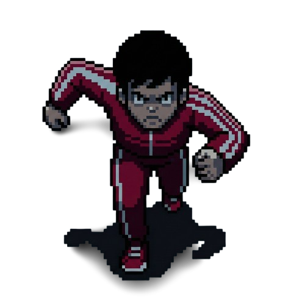
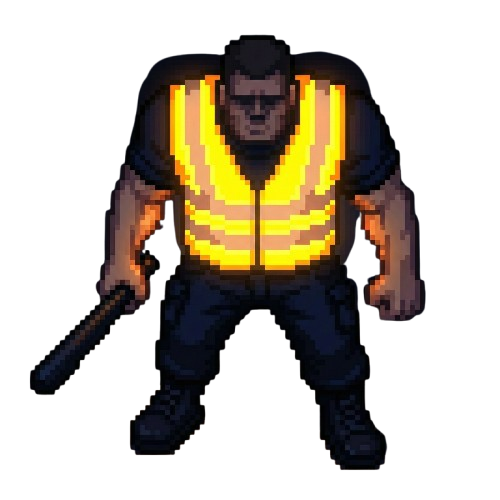

Post-apokalyptické severočeské město čeká. Přežiješ noc?
Zjistit víceVarnsdorf Survivor je akční 2D survival hra inspirovaná fenoménem Vampire Survivors, vytvořená v enginu Godot 4.5. Hrajete za obyčejného člověka s batohem, který se musí ubránit nekonečným vlnám zmutovaných obyvatel města. Sbírejte zkušenosti, zvyšujte svou úroveň a přežijte co nejdéle.
Nepřátelé se neustále spawnují. Čím déle hrajete, tím je hra těžší.
Zabíjejte nepřátele, sbírejte z nich zkušenosti a vylepšujte si své zdraví a poškození.
Užijte si originální pixel-art grafiku a tísnivý audio design.
Ponořte se do tísnivé atmosféry post-apokalyptického města. Zvukový design je klíčovým prvkem hry.

Základní jednotka. Sám o sobě je pomalý a slabý, ale s nákupní taškou v ruce se vás pokusí obklíčit v obrovských počtech.

Agresivní typ v šusťákové soupravě. Má méně zdraví, ale sprinuje přímo na vás. Prioritní cíl k eliminaci!

Boss jednotka v reflexní vestě s obuškem. Obrovský, těžkopádný tank s velkým množstvím HP. Zastavit ho nebude snadné.